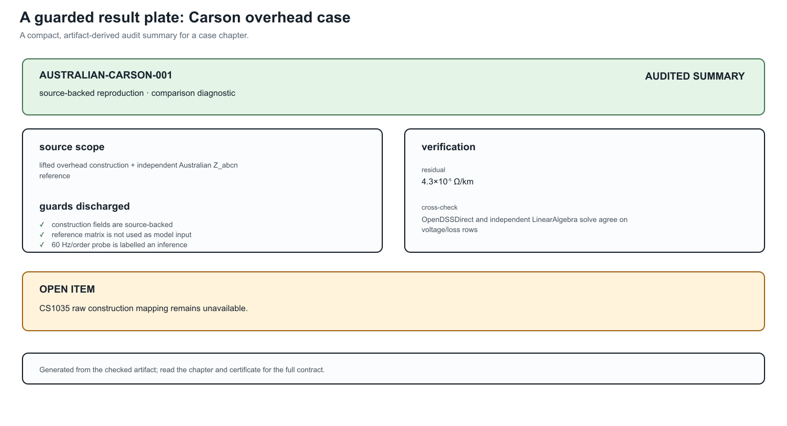
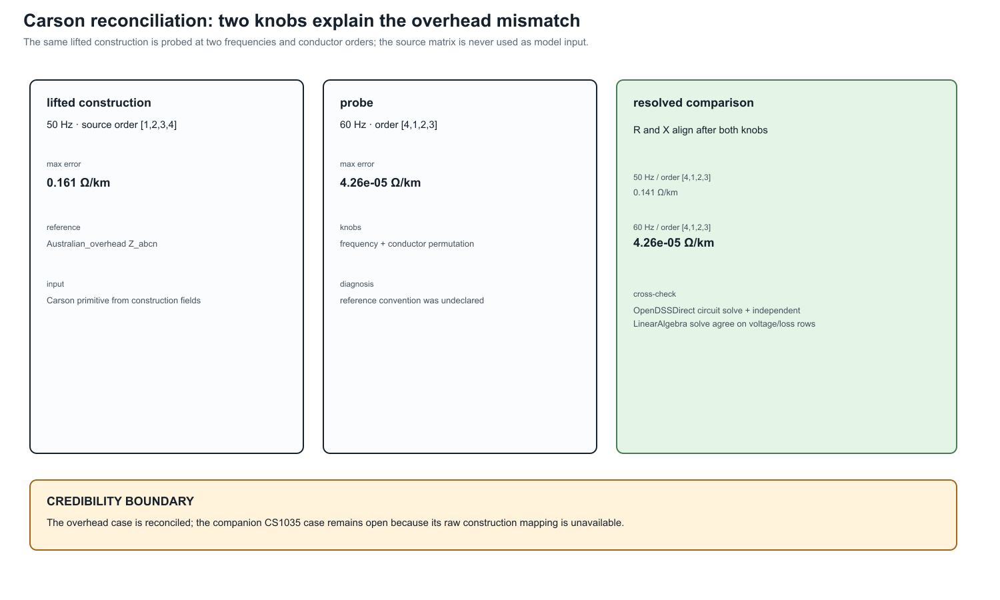
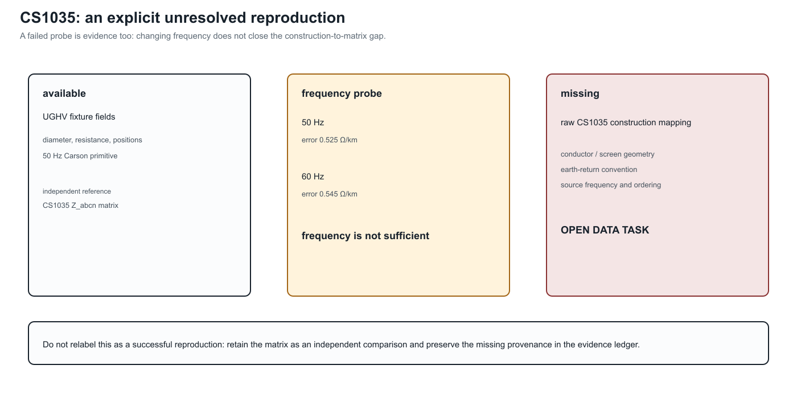

Australian construction inputs: Carson and OpenDSSDirect
Page status: source-backed Carson/OpenDSSDirect reproduction; overhead and underground reference matrices remain independently compared outputs, and the CS1035 construction mapping is explicitly unresolved.
This case is a provenance check, not a transcription of the matrices already stored in the source repository. We lift the construction data that is available in the ImpedanceModels.jl line-library history, regenerate the multiconductor primitive with BMOPFTools' Carson implementation, and then solve a small four-wire OpenDSS circuit with OpenDSSDirect.jl.
What is lifted
The reproducible input record is experiments/data/australian_source_inputs.toml. It records the source commit, the 50 Hz modified-Carson setting, and the construction fields:
- the Pluto overhead wire diameter, AC resistance, four conductor positions, and 0.2 km length;
- the available UGHV 185 Al PILC four-wire construction fixture, its wire diameter and AC resistance, its four positions, and 0.1 km length.
The generated line code is assembled in memory from those fields. No rmatrix, xmatrix, or cmatrix from an existing .dss case is used to construct the model. Each OpenDSS load explicitly sets vminpu=0 and vmaxpu=2, so the reproduction does not inherit a hidden load-model voltage clamp.
The companion register experiments/data/australian_source_audit.toml keeps provenance judgements separate from those inputs. Each case records whether a field is lifted, derived, inferred, or unresolved, together with machine-readable finding codes. In particular, the overhead 60 Hz/order alignment is an inference from the probe, not a statement found in the source file; the underground CS1035 mapping remains unresolved.

The generated artifact also carries the versioned power-network-impedance contract from experiments/data/impedance_contract_schema.toml. It requires ordered terminals, series and shunt blocks, units, ampacity limits, grounding assumptions, source lineage, named derived views, and findings. The validator is deliberately small: it checks that a record is structurally safe to exchange, while the audit register carries the domain-specific judgements that no generic schema can infer.
What is compared, but not used
The files under data/opendss/Australian_overhead and data/opendss/Australian_underground contain derived reference matrices. We parse those matrices after the new solve and report the maximum complex-series error in the generated artifact experiments/generated/australian-carson-reproduction.json. The artifact marks these matrices with matrix_used_as_input = false.
The overhead source geometry in the line-library history regenerates a series matrix with approximately $R_{ll}=0.21735\,\Omega/\mathrm{km}$ and $X_{ll}=0.73853\,\Omega/\mathrm{km}$. The Australian Z_{abcn} reference file instead has approximately $0.22722+j0.87933\,\Omega/\mathrm{km}$ on its diagonal. A frequency/order probe resolves this apparent mismatch: at 60 Hz, and with the source conductor order $[4,1,2,3]$ rather than the lifted primitive order $[1,2,3,4]$, the maximum complex-series error falls to about $4.3\times 10^{-5}\,\Omega/\mathrm{km}$. The generated artifact retains the source-backed 50 Hz result as its primary comparison and records this 60 Hz/order diagnosis separately; the reference file itself does not declare that frequency in the available source data.
The underground CS1035 file is handled more cautiously. Its active 4-by-4 matrix is available for comparison, but the source repository does not provide the raw cable construction mapping for that case. Changing the Carson probe from 50 Hz to 60 Hz does not reduce the mismatch (the maximum error increases slightly), so frequency is not a sufficient explanation. We therefore label the UGHV construction as an explicit fixture, keep the CS1035 matrix independent, and leave the mapping as an open data task.
The source StandardLinecodes.dss also warns that the underground geometry's negative physical heights cannot be passed directly to OpenDSS; the reproduction uses the documented positive reference-plane convention and records that choice in the construction code rather than silently treating it as a measured cable depth.
Reproduce
From the repository root:
julia --project=experiments experiments/run_australian_carson_reproduction.jlThe JSON records the construction inputs, generated series and capacitance matrices, OpenDSS commands, convergence diagnostics, bus voltages, losses, the independent-reference comparison, and a status for each cross-check. A second LinearAlgebra-only constant-power solve agrees with OpenDSS on all rows when voltage and line losses are compared (the voltage error is below $10^{-6}$ V and the line-loss error below $10^{-3}$ VA in the current fixture). OpenDSS Circuit.Losses() reports the line-element loss but not the separately modelled grounding-reactor loss; the artifact therefore keeps both line-loss and total-loss comparisons. The embedded OpenDSS engine is left at its stable 60 Hz default; the Carson primitive follows the 50 Hz source-library setting. This distinction is explicit in the artifact rather than hidden behind a text-level set frequency command, which is unstable in the current OpenDSSDirect release.
The underground fixture also includes low and high grounding-impedance rows. They keep the construction and load row fixed while changing only the grounding factor, making the neutral-voltage and grounding-loss sensitivity observable rather than an implicit assumption. Both rows remain within the same independent line-loss cross-check contract.
The result is therefore useful in two ways: it verifies that the available construction data can be regenerated end to end, and it identifies exactly which published cases still need their original construction provenance before they can be claimed as faithful reproductions.
Reconciliation and the unresolved companion case

The two knobs are shown together because either one alone leaves a substantial residual. They are diagnostic probes, not retroactive source metadata: the artifact records the 60 Hz/order alignment as an inference.

This is a deliberate credibility boundary. The available fixture fields and the independent matrix are useful, but without the raw conductor/screen geometry, earth-return convention, frequency, and ordering, the construction map cannot be reconstructed faithfully.